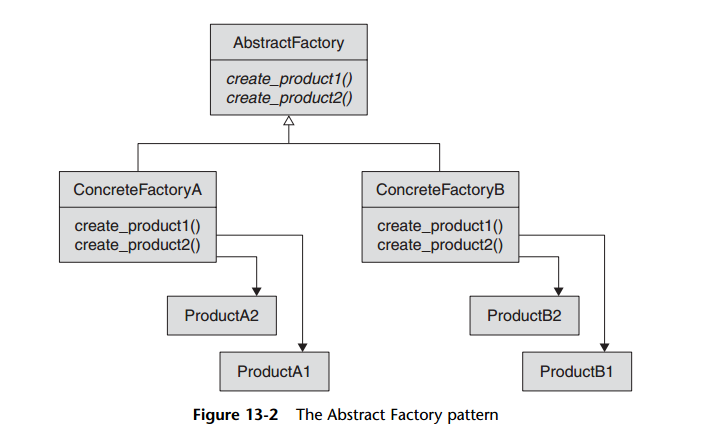

Abstract Factory pattern
This pattern provides an interface for creating families of objects without specifying their concrete classes.
When there are related objects that are used together in an application.
When there are lots of objects, each under a particular family/group, many times we end up with conditionals scattered
across all the places where we instantiate objects. It's not rare to see the same switch/case or if/else in many classes
that return an object of a specific type based on the condition. This becomes a maintenance hell later. Ideally,
the decision of which group to choose should be made by the application which uses the objects, and the application
shouldn't know anything apart from the interfaces on the objects it needs to know.
